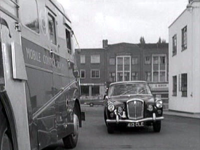

|
|
HELP FIND THE FOLLOWING LOCATIONS
PAGE 87
GIDEON’S WAY: The State Visit (John Moxey: August 1964)
Chalk


(Identified by Stephen Carter, September 2007)


Unknown 2– The Fischer’s home, which Detective Chief Inspector David Keen (Alexander Davion) visits looking for Max Fischer.


Old St
Pancras Church Gardens,
(Identified by Stephen carter, July 2007)


Unknown 4– Max Fischer (Alfie Bass) takes the bus into town where he intends to plant his bomb.


 The building on the corner is a
fire station.
The building on the corner is a
fire station.
Max Fischer (Alfie Bass)
arrives in Piccadilly Circus,
W1, travels through


The Mall, SW1 – Crowds gather outside


Unknown 5– Commander Gideon (John Gregson) and Detective Chief Inspector David Keen (Alexander Davion) find a television outside broadcast van to help them search for Max Fischer.

Station
Road, Harrow – Police cars patrol the street
looking for Fischer as well as dropping of descriptions to constables on the
beat.
(Identified by Andrew Chilcott, February 2008)


 Andrew Chilcott – “This is indeed
Harrow - Soper's (as Debenham's) is still on Station Road, but John Collier is now
- ironically - Randall's coffee house on the corner of St. John's Road.”
Andrew Chilcott – “This is indeed
Harrow - Soper's (as Debenham's) is still on Station Road, but John Collier is now
- ironically - Randall's coffee house on the corner of St. John's Road.”
Unknown 6b– Police cars patrol the street looking for Fischer as well as dropping of descriptions to constables on the beat.


 Teetgents, Dixons Cameras
Teetgents, Dixons Cameras
Unknown 6c– Police cars patrol the street looking for Fischer as well as dropping of descriptions to constables on the beat.


Unknown 6d– Police cars patrol the street looking for Fischer as well as dropping of descriptions to constables on the beat.

GIDEON’S WAY: The Lady-Killer (Leslie Norman: September 1964)
Unknown 1– The body of a woman is found washed up on a beach by a man walking his dog.

 Somewhere between Eastbourne and
Somewhere between Eastbourne and

Hendon
Technical College – now the Middlesex University Business School– Robert Carne (Ray Barrett) takes Marion Grove (Rosemary Leach) are
married at a registry office. Detective Chief Inspector David Keen (Alexander
Davion) and Rina (Justine Lord) have their suspicions aroused when Crane attacks
one of the press photographers for taking their picture.
(Identified by Alan Field, June 2008)


G1 – After their marriage Robert Carne (Ray Barrett) takes Marion Grove (Rosemary Leach) back to her country mansion where they relax by the pool and discuss their future.

Market
Hill - Buntingford – Hertfordshire – Robert Carne
(Ray Barrett) stops off at a small town to pick up the key for the country
cottage where he and Marion Grove (Rosemary Leach) are to stay.
(Identified by Alan Field, December 2007)

 Alan Field – “Link to picture here: http://www.francisfrith.com/search/england/hertfordshire/buntingford/photos/buntingford_B245015.htm
“.
Alan Field – “Link to picture here: http://www.francisfrith.com/search/england/hertfordshire/buntingford/photos/buntingford_B245015.htm
“.
Unknown 3 – Robert Carne drives to the country cottage where he and Marion Grove are to stay.

Unknown
4 – Robert Carne (Ray Barrett) and


Unknown 5 – Robert Carne (Ray Barrett) goes for a drink and an alibi at the local pub. He notices the police station and decides to use the local sergeant to confirm his story.


 The pub is called “The Star”
The pub is called “The Star”
Think you know a spot? Need a bigger image? Email me.
< Previous | Index | Avengerland | Next >
Copyright © 2003 Anthony R. McKay